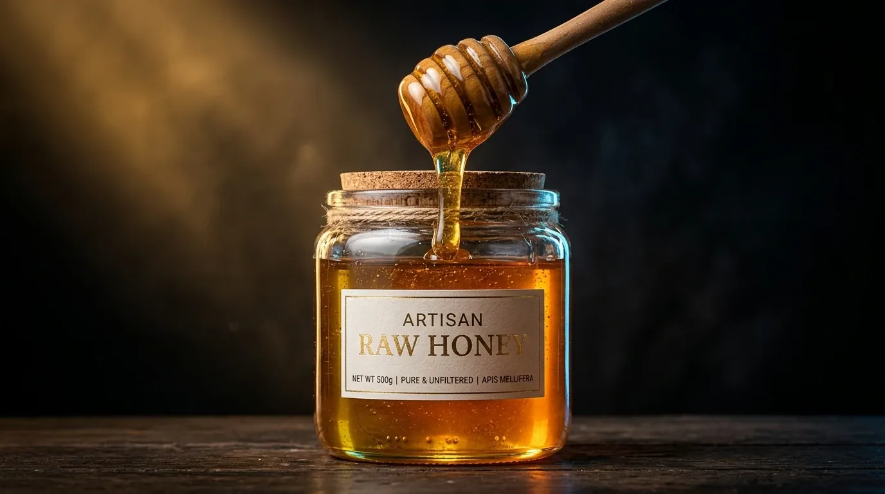
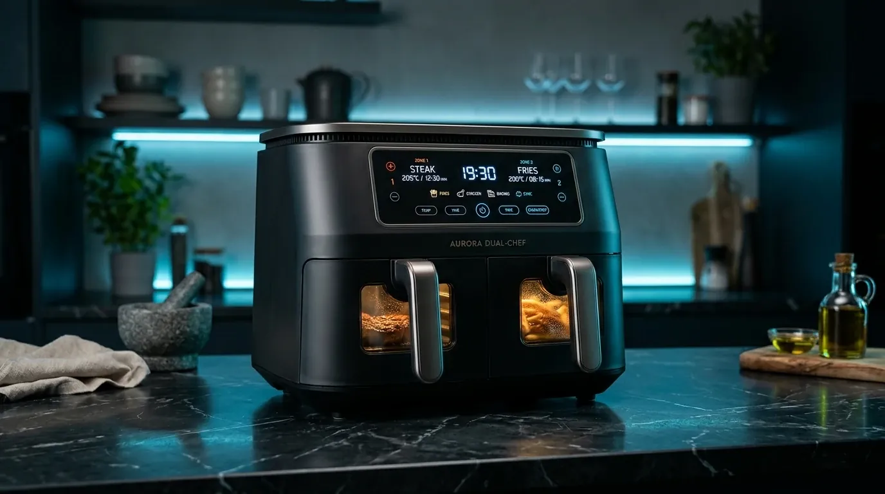
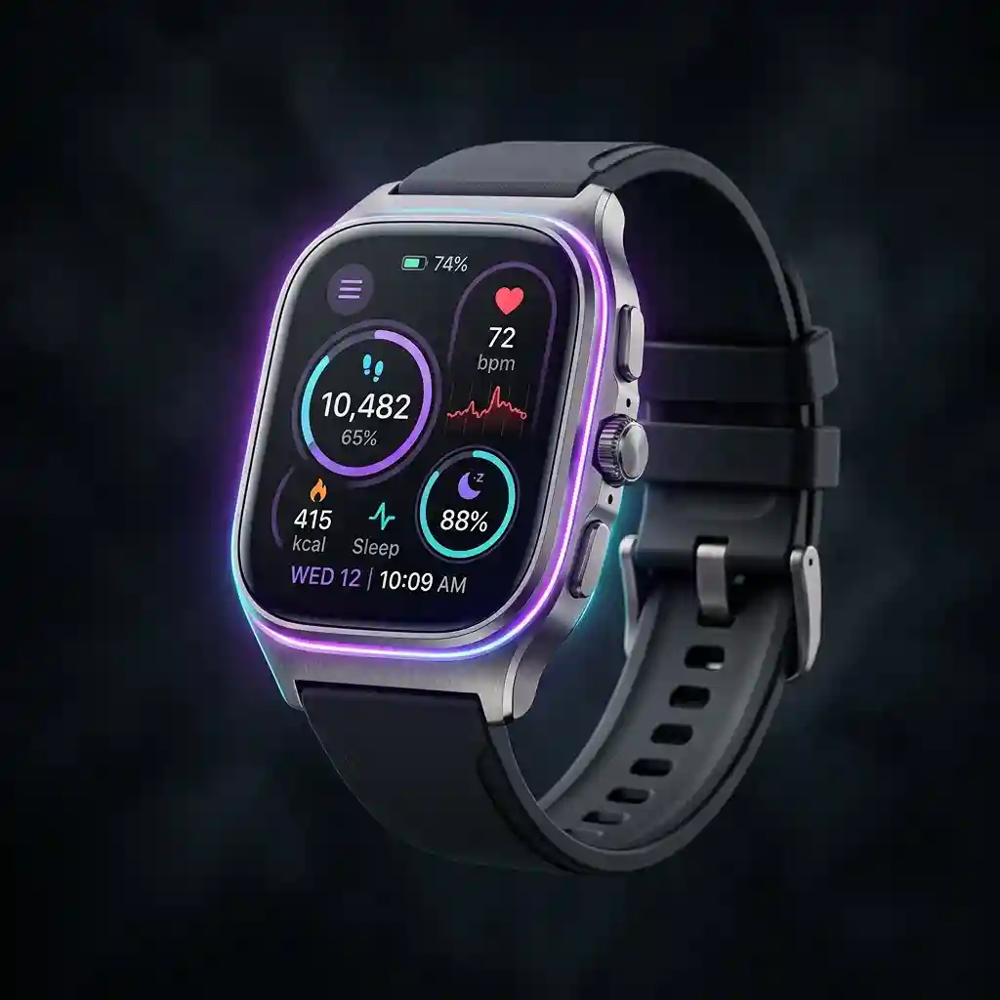

💻 Tech & Laptops
2026 Laptop Buying Guide: Apple M3 vs Intel Core Ultra
Benchmark breakdowns of battery efficiency, neural acceleration, and graphic rendering workflows.
Expert perspectives spanning next-gen hardware, farm-fresh organic nutrition, capsule fashion, and smart home automation.
Whether you are a developer, gamer, designer, or casual student, finding the right workstation configuration can be complex. We break down CPUs, GPUs, RAM, and thermals in our ultimate guide.
Read carefully researched analyses and setup guides prepared by our expert engineering team
Benchmark breakdowns of battery efficiency, neural acceleration, and graphic rendering workflows.

Exploring cellular health benefits, live enzymes, and unheated extra virgin nutrition straight from sustainable sanctuaries.
How 8 durable, water-resistant garments can generate 30 distinct modern everyday looks without fast-fashion waste.

Cut kitchen energy usage by 45% while achieving restaurant-grade crispness with 90% less oil consumption.
Unify Apple HomeKit, Google Home, and Alexa with zero cloud lag, local mesh networks, and instant pairing.

Maintain 99.97% indoor air purity with automated HEPA air filtration and intelligent ambient humidity balancing.

Which active noise cancelling flagship headphone reigns supreme in comfort, sound depth, and spatial acoustics?
Inside our temperature-monitored dark stores that keep fruits and dairy at peak nutrient bioavailability.

Harnessing 14-bit RAW workflows, periscope zoom stabilization, and AI neural ISP engines for studio-grade capture.